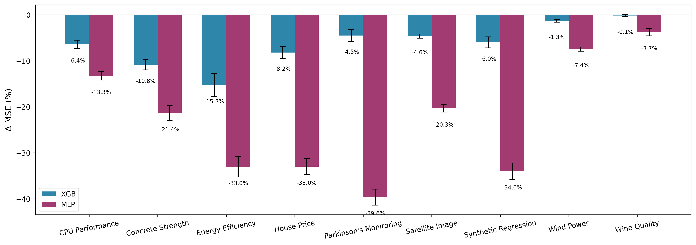
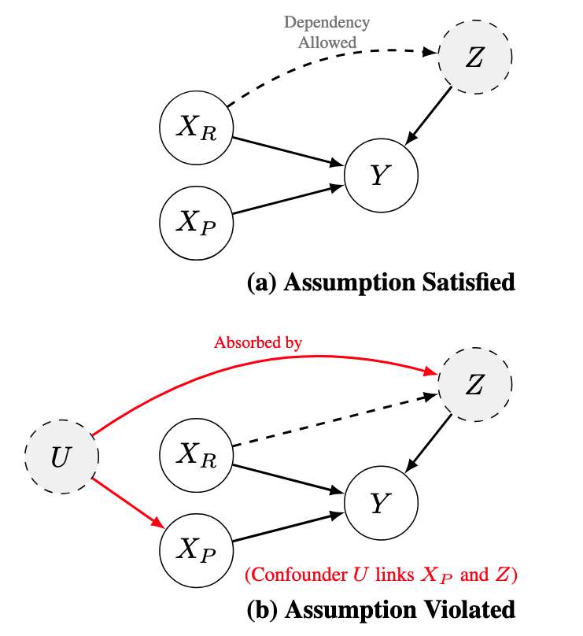
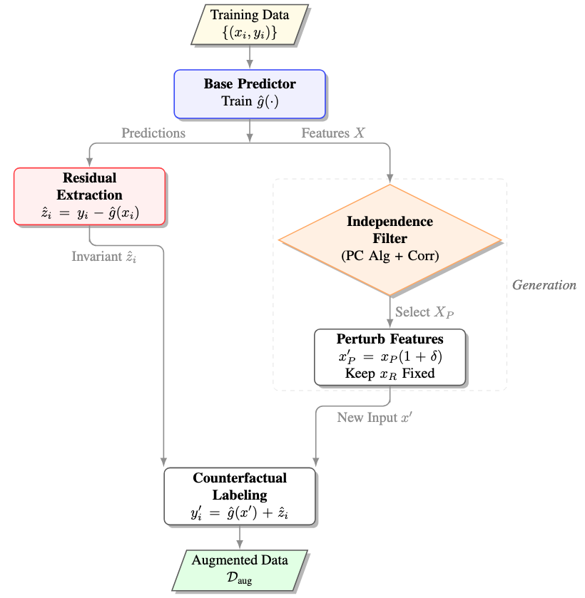
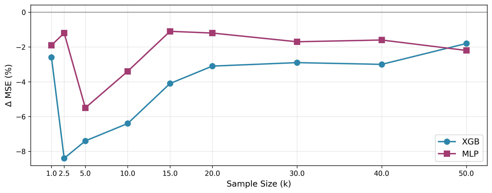

Abstract
Data-driven modeling in real-world regression tasks often suffers from limited training samples, high collection costs, and noisy observations. Inspired by the impact of data augmentation in vision and language, we propose a novel Counterfactual Residual Data Augmentation (CRDA) technique for tabular regression. Our key insight is that once a regressor has modeled the systematic component of the data, the remaining noise can be viewed as an invariant residual that remains stable under small perturbations of carefully selected features. We exploit this residual invariance to generate new, yet realistic, training samples, effectively expanding the dataset without requiring additional real data. Our method is model-agnostic and readily applicable to various types of regressors. In experiments across datasets from a variety of benchmark repositories, on average, CRDA reduces an MLP Regressor's MSE by 22.9% and an XGBoost Regressor's MSE by 6.4%. When compared to existing state-of-the-art data generators and augmentation techniques, CRDA consistently outperforms in MSE reduction. By adding principled counterfactual variations to the training data, our method offers a simple and efficient remedy for noise-prone, small-sample regression settings.
TL;DR
Train a base regressor. Compute residuals. Identify the features that look statistically independent of the residual — the safe-to-perturb ones — then synthesize new samples by perturbing only those features and reusing the same residual as the noise. A built-in Wilcoxon safety gate decides whether the augmented data actually beats the baseline; if not, CRDA returns the untouched base model.

The intuition
Take house-price prediction. A model captures systematic value drivers like location and square footage, while the residual captures unobserved factors — say, a bidding war driven by a specific buyer's urgency. Perturbing a secondary feature like garage finish shifts the systematic price but is unlikely to change that buyer's urgency. CRDA exploits this to synthesize a counterfactual: a house with a different garage finish, an updated systematic price, but the exact same "bidding war" residual.
The same pattern recurs across domains:
- Clinical recovery-time prediction. Perturbing the amount of physical therapy changes a patient's predicted recovery time but does not alter their unobserved physiology.
- Crop-yield regression. Perturbing fertilizer dose shifts the predicted yield while leaving the field's unmeasured pest pressure untouched.
- Home energy forecasting. Perturbing the thermostat setpoint moves predicted consumption but not whether a window was left open that day.
Method
CRDA assumes the data-generating process follows an additive-noise structural causal model, decomposing the target into a systematic part and a residual:
Partition features into a perturbable subset $X_P$ and a fixed subset $X_R$. CRDA's only assumption is that the residual is conditionally independent of $X_P$ given $X_R$:

Algorithm at a glance
- Split & baseline. Fit a baseline regressor $\hat{g}$ on $\mathcal{D}_{\text{train}}$.
- Residuals. Compute $\hat{z}_i = y_i - \hat{g}(\mathbf{x}_i)$ for every training point.
- Independence filter. Select $X_P$ by removing any feature that (a) has a direct edge to $\hat{Z}$ under the PC algorithm or (b) is strongly Pearson-correlated with $\hat{Z}$. If $X_P = \emptyset$, return the baseline.
- Counterfactual generation. For each $(\mathbf{x}_i, y_i)$, draw $\delta\sim\mathrm{Unif}[-p, p]$ on $X_P$ and synthesize $y'_i = \hat{g}(\mathbf{x}'_i) + \hat{z}_i$, reusing the original residual.
- Safety gate. $K$-fold CV the augmented vs. unaugmented model and run a Wilcoxon signed-rank test on the paired errors.
- Commit or abstain. If $p < \alpha$, retrain on $\mathcal{D}_{\text{train}}\cup\mathcal{D}_{\text{aug}}$; otherwise return the untouched $\hat{g}$.

When does CRDA help? The sweet spot
On a synthetic DGP $Y = X_1^2 + X_2 X_3 + Z$ with $Z \perp (X_1, X_2, X_3)$, we generate 50,000 samples and apply CRDA across a range of sample sizes. CRDA helps least at the extremes — below 2.5k samples the base predictor is too weak to produce meaningful residuals; above 30k the baseline is already accurate enough that there's little room to improve — and most in the small-to-moderate regime that dominates real applications.

Against state-of-the-art tabular augmentation
Across nine UCI / PMLB / Kaggle datasets, CRDA is the only method that reliably improves both XGBoost and MLP without catastrophic failures. Geometric methods (C-Mixup, ADA) help on some datasets but inflate error by 100%+ on others; deep generators (TabDDPM, TVAE, CTGAN) frequently degrade regression performance because they don't preserve the conditional $P(Y\mid X)$ that regressors depend on.
Note: for a fair head-to-head, CRDA's Wilcoxon safety gate is disabled in this comparison, so augmentation is applied unconditionally just like the competing methods. The advantage below comes from the augmentation mechanism itself, not from the gate.
| Dataset | Model | C-Mixup | ADA | TabDDPM | TVAE | CTGAN | CRDA |
|---|---|---|---|---|---|---|---|
| CPU Performance | XGB | +1.7 | +1.9 | +36.5 | +24.2 | +41.6 | −1.4 |
| MLP | −0.9 | −0.6 | +30.2 | +36.6 | +108.0 | −12.2 | |
| Satellite Image | XGB | +6.4 | +1.4 | +10.7 | +12.5 | +11.0 | −0.7 |
| MLP | −0.8 | +3.3 | +9.9 | +18.8 | +55.1 | −23.5 | |
| Synthetic Regression | XGB | +141.5 | +18.3 | +25.0 | +116.5 | +164.1 | +2.3 |
| MLP | +78.1 | +16.7 | −19.2 | +71.6 | +198.9 | −33.3 | |
| Energy Efficiency | XGB | −18.0 | −20.7 | +3.4 | −19.4 | −24.7 | −10.7 |
| MLP | +11.9 | −22.9 | +11.1 | +127.7 | +360.2 | −32.5 | |
| Parkinson's Monitoring | XGB | +105.1 | +89.5 | +286.7 | +405.1 | +565.3 | −0.3 |
| MLP | +116.1 | +28.7 | +184.9 | +659.0 | +1454.2 | −48.2 |
Table 1 (excerpt). $\Delta$ MSE % vs. each augmentation baseline, averaged over 10 seeds. Lower is better. Bold is best per row. The full nine-dataset table with standard errors is in the paper.
Try it: the crda pip package
A standalone pip package, crda, makes CRDA a drop-in for any sklearn-compatible regressor.
pip install crda
from crda import CRDA, Config
from sklearn.neural_network import MLPRegressor
config = Config(dataset="data.csv", dataset_name="my_data", random_seed=42)
crda = CRDA(config)
results = crda.run(MLPRegressor(hidden_layer_sizes=(100, 50)))
print(f"Baseline MSE: {results['score'].values[0]:.4f}")
print(f"CRDA MSE: {results['aug_score'].values[0]:.4f}")
print(f"Improvement: {results['delta_score'].values[0]:.2f}%")
Note: the pip package is a reference implementation, not a 1-to-1 reproduction of the paper experiments. It uses a different independence filter and adds native support for categorical features — see Differences from the Paper in the package README for the full breakdown. The residual-reuse construction and the Wilcoxon safety gate are identical. For the exact paper pipeline and experiments, see the research repository.
BibTeX
@inproceedings{mohebbi2026crda,
title = {Counterfactual Residual Data Augmentation for Regression},
author = {Mohebbi, Hossein and Schulte, Oliver and Li, Ke and Poupart, Pascal},
booktitle = {Proceedings of the 43rd International Conference on Machine Learning (ICML)},
year = {2026},
eprint = {2606.28460},
archivePrefix = {arXiv},
url = {https://openreview.net/forum?id=mqd3zyHQj9}
}